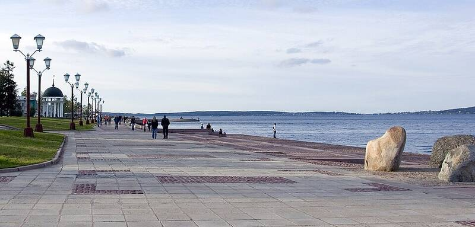

Petrozavodsk phenomenon
Karelia, Russia, 1977

On September 20, 1977, a glowing, jellyfish-shaped object was seen over the city and far beyond. It prompted a Soviet state UFO research program, and it was most likely a secret rocket launch from Plesetsk. 1
Open in the interactive Watcher
Related
Sources
- Petrozavodsk phenomenon Wikipedia